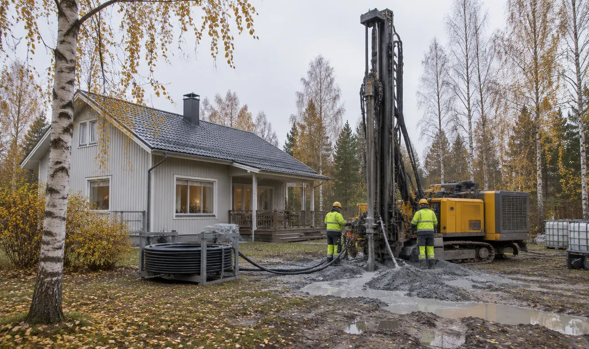

Yleisin öljytalossa
Maalämpö
Lämpö otetaan porakaivosta. Tasainen teho myös pakkasilla, ja laite tuottaa myös käyttöveden.
- Sopii
- Öljy- ja sähkötalot
- Asennus
- Poraus + 2–3 pv
- Lämmittää vedenkin
- Kyllä
- Huomioi
- Toimenpidelupa